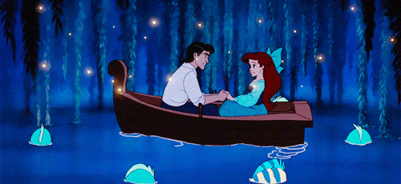

Although her tender feet bled so that even her steps were marked, she only laughed, and followed him till they could see the clouds beneath them looking like a flock of birds travelling to distant lands. While at the prince’s palace, and when all the household were asleep, she would go and sit on the broad marble steps; for it eased her burning feet to bathe them in the cold sea-water; and then she thought of all those below in the deep.
As the days passed, she loved the prince more fondly, and he loved her as he would love a little child, but it never came into his head to make her his wife; yet, unless he married her, she could not receive an immortal soul; and, on the morning after his marriage with another, she would dissolve into the foam of the sea. “Do you not love me the best of them all?” the eyes of the little mermaid seemed to say, when he took her in his arms, and kissed her fair forehead. “Yes, you are dear to me,” said the prince; “for you have the best heart, and you are the most devoted to me; you are like a young maiden whom I once saw, but whom I shall never meet again. I was in a ship that was wrecked, and the waves cast me ashore near a holy temple, where several young maidens performed the service. The youngest of them found me on the shore, and saved my life. I saw her but twice, and she is the only one in the world whom I could love; but you are like her, and you have almost driven her image out of my mind. She belongs to the holy temple, and my good fortune has sent you to me instead of her; and we will never part.”